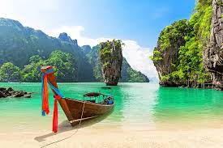
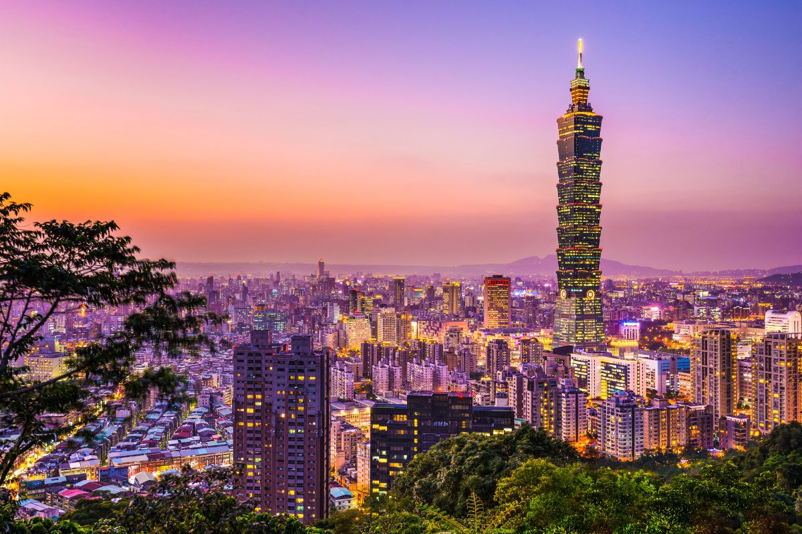
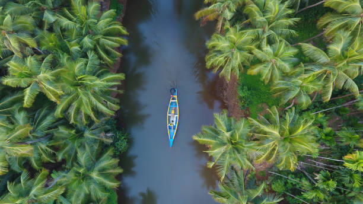

More About Asia:
Asia is the largest continent in the world by both land area and population. It covers an area of more than 44 million square kilometers, about 30% of Earth's total land area and 8% of Earth's total surface area.
Most famous places to visit in Asia:
1.Phuket.

Phuket, an island province nestled....
2.Taipei.

Taipei, the bustling capital of Taiwan....
3.Kerala.

Kerala, often referred to as God's Own Country....